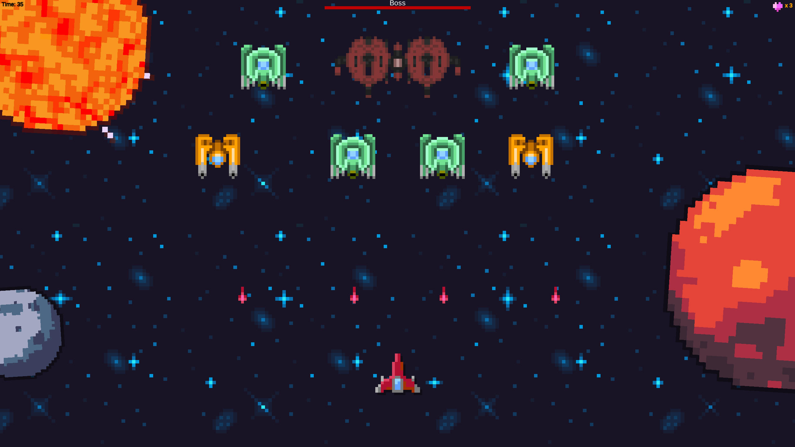
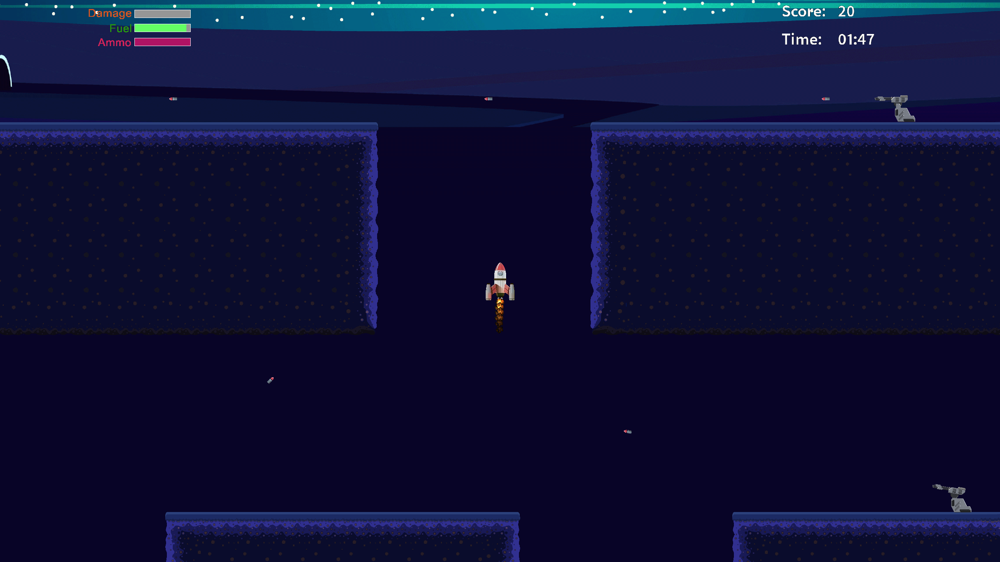
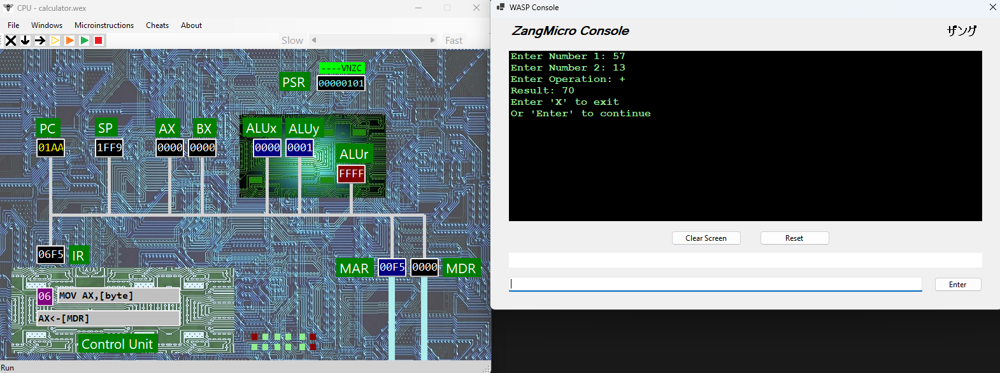
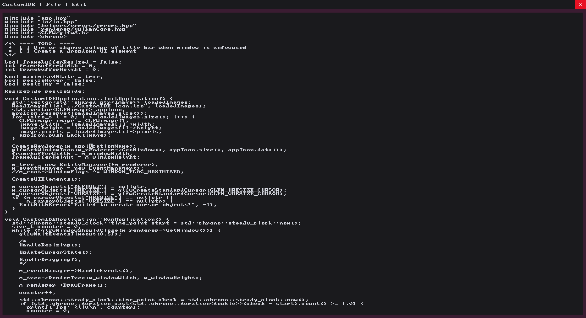

A second year Games Computing student with a strong focus on performance, optimisation, and problem solving. Experience primarily within the development of games, but eager to learn new technologies and improve skills through a variety of projects outside of planned learning. I enjoy technical challenges and exploring how systems work under the hood. Most of my projects are written in C++ using a variety of game engines; however, I also have experience with making projects in Python, C, C# and Assembly. Seeking a placement year in software engineering or games programming.
An overview of my best projects, for more information about any project check the projects page.
Intergalactic Invasion


A simple space invaders like shoot 'em up game made in Unity using C#. This was created as part of my final college project so it was made in a limited time frame. Source code is available via the GitHub link above. An online and downloadable copy is available to play on Itch.io via the link above.

Hornet Level Loading System
A level loading system build using the in-house Hornet game engine at Northumbria University. This level loading system was built using an existing game within the Hornet engine with a specified level file configuration. This project was as a university assignment which was awarded a mark of 95%.

WASP Calculator
A calculator program wrote using the WASP custom syntax assembly language created at Northumbria University. This calculator program is designed to run using a specific CPU emulator capable of running the WASP assembly language. This project was part of a university assignment where it achieved a mark of 50 out of 50.

Custom IDE
A customisable IDE wrote using C++ with Vulkan for rendering and GLFW for window management. This IDE aims to allow for total user customisability by allowing for configuration of keybinds, layout, colour schemes and more allowing the developer to fit their preferences. This is a personal project that is still in early development most aspects of the program are likely to subject to change.
